Scan to PDF
Straightened, searchable, ready to share.
Tinkrum · Paper
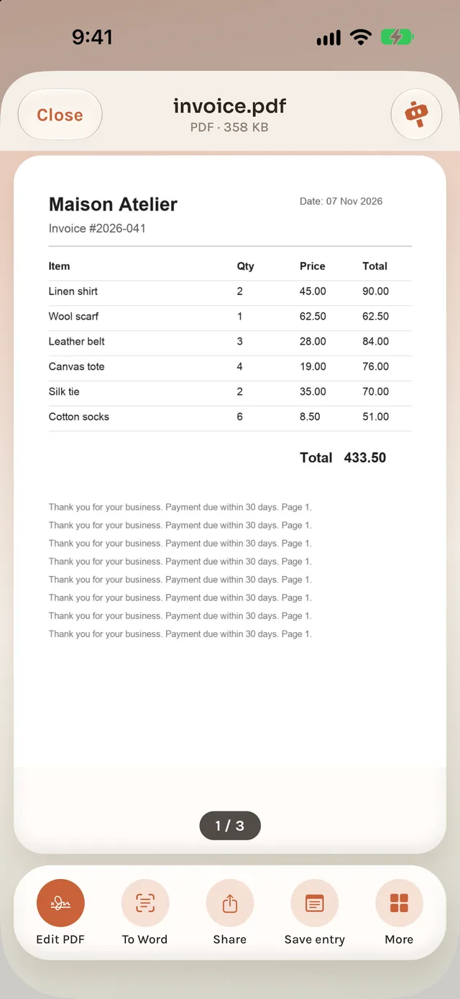
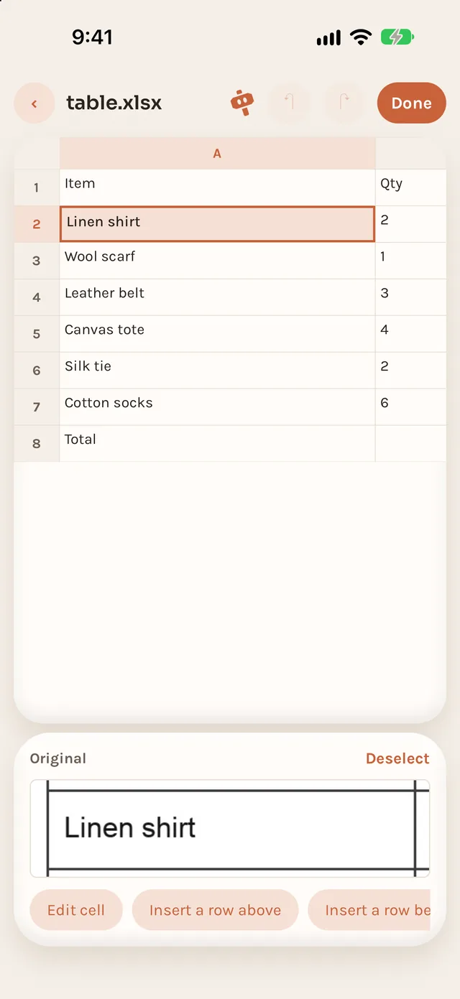
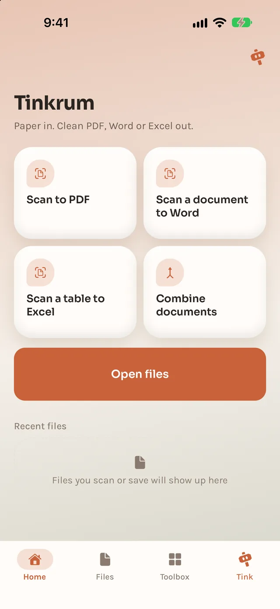
01 · Paper
Straightened, searchable, ready to share.
A printed page you can edit.
Rows and columns, not a picture.
PDFs and photos in one file.
Combine PDFs into one, in the order you choose.
Mix PDFs and photos into a single PDF.
Put your photos into one PDF.
Turn photos of paper into straight PDF pages.
Office files to PDF. On Android, Word only.
Shrink a PDF to a size you set. Text stays selectable.
Pick, remove, reorder and rotate pages.
Keep only some pages: odd, even or a range.
Turn some or all pages clockwise.
Cut a PDF every N pages, or by page ranges.
Add page numbers to every page.
Type into a PDF form on your phone.
Draw or pick a signature and place it on a page.
Save every page as a JPG.
Read a PDF's text, scanned pages too.
Type the password, get a PDF without one.
Lock a PDF. The password is never saved.
Stamp text like COPY or Confidential on pages.
Turn your records into a PDF report, list or receipt.
Add text, arrows, boxes and drawing.
Auto-fix colour, or set brightness and contrast.
Keep the subject on a transparent or solid background.
Shrink photos to a size you choose.
Turn HEIC, PNG or WebP into JPG, PNG or WebP.
Turn iPhone HEIC photos into JPG.
Make photos smaller by edge, width or percent.
Frame each photo, with a locked ratio if you like.
Turn or mirror photos.
Strip location and camera info.
Stack screenshots into one long image.
Arrange photos in a 2 to 4 column grid.
Turn photos into a looping GIF.
Blur or black out names, numbers or faces.
Put text in a corner or repeat it across.
Frame your face, get the official size.
Lay ID photos out on a sheet to print.
Find the page edges and straighten the photo.
Turn speech into a .srt subtitle file.
Play from 0.5× to 4× and export an MP4.
Center-crop to 9:16, 1:1, 4:5 or 16:9.
Turn a video by 90, 180 or 270 degrees.
Use your own music as the soundtrack.
Export an MP4 with no sound.
Pick a moment and save it as a JPG.
Put videos together in the order you choose.
Shrink to a size or quality you choose.
Make MOV and HEVC videos open anywhere.
Keep only the part you pick.
Pick a clip and turn it into a GIF.
Clean background noise out of speech.
Even out the volume, or set it in dB.
Turn a recording into text on your phone.
Record audio on your phone.
Shrink recordings to a size or quality.
Convert recordings to M4A, MP3 or WAV.
Keep only the part you pick on a waveform.
Put recordings together in order.
Read text aloud and save it as audio.
Save only the sound of a video.
Read printed text from photos.
Scan a page and get its text.
Translate text on your phone, in 20 languages.
Read the text in a photo, then translate it.
Translate the text in a PDF.
Turn typed or pasted text into a PDF.
Pack any files into one ZIP.
Pack photos into one ZIP.
Take the files out of a ZIP.
Turn a link or text into a QR code.
Share your Wi-Fi with a scan.
Read QR codes in photos and screenshots.
On-device model
Scan a receipt or a business card. A small model on your phone suggests the record and the details.
Optional one-time download (Qwen3.5 2B, about 1.3 GB). Without it, built-in rules still suggest.
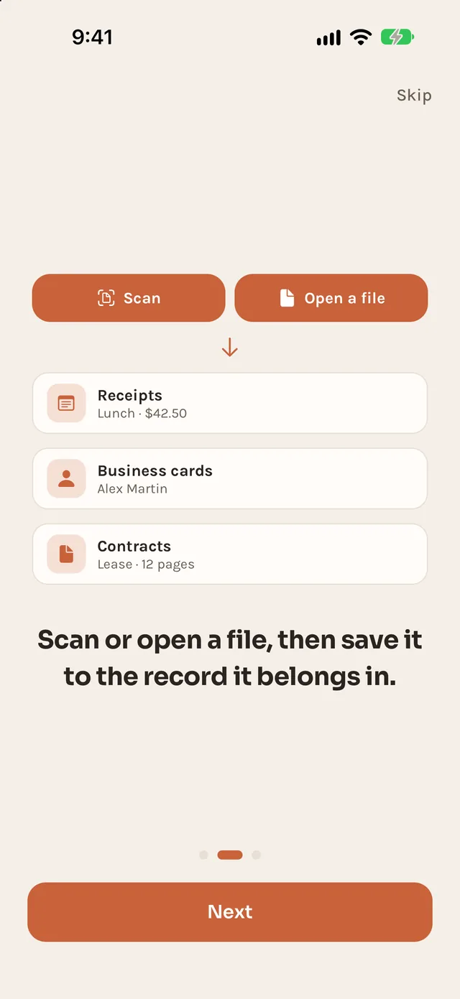
02 · Tink
Tell Tink what you want in one sentence. It rebuilds the screens.
Add the visa photo quick action. Switch to neon style.
Look changes wait in a draft. Everything can be undone.
Tink changes the app, never your files.
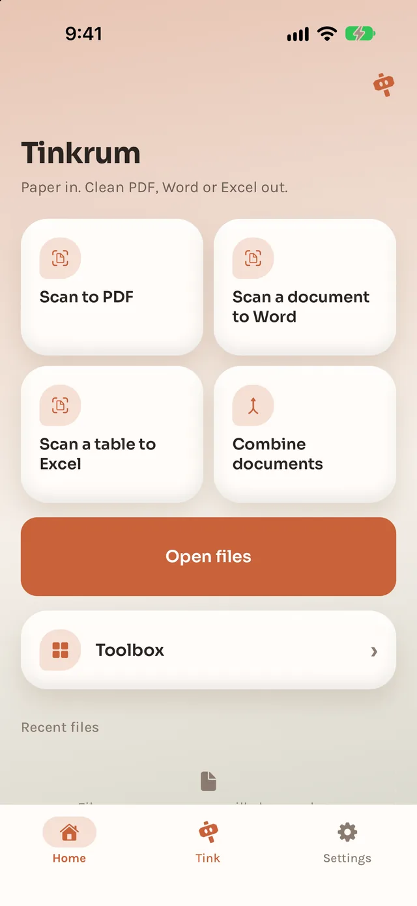
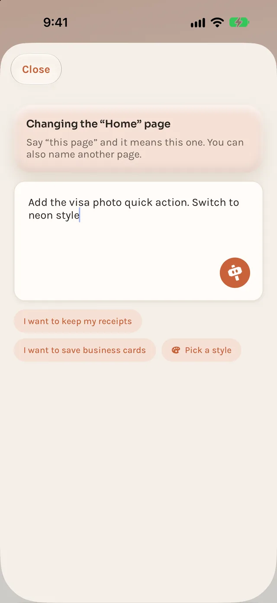
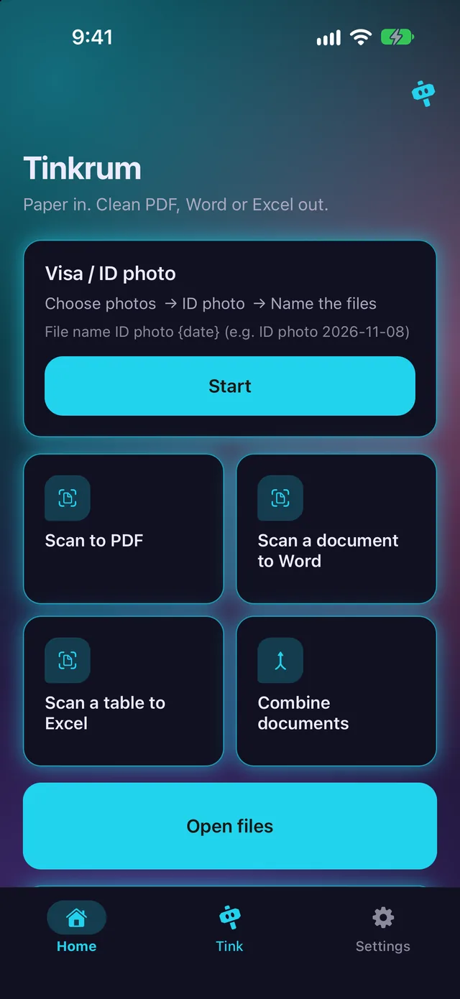
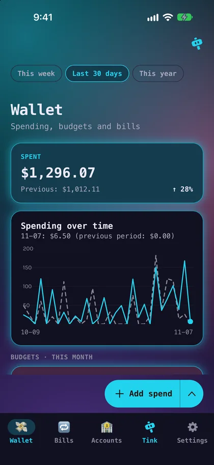
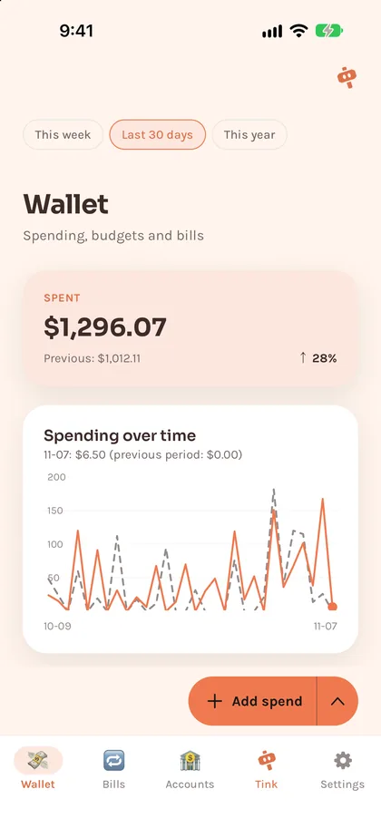
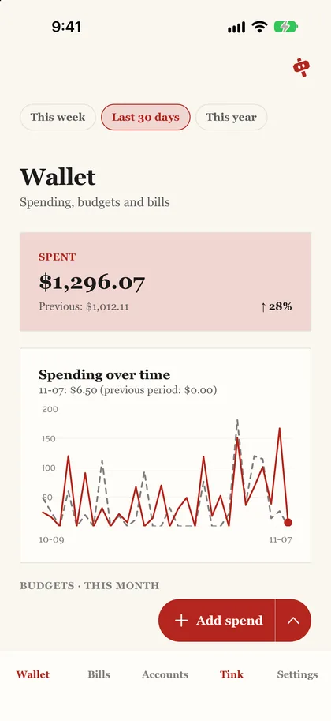
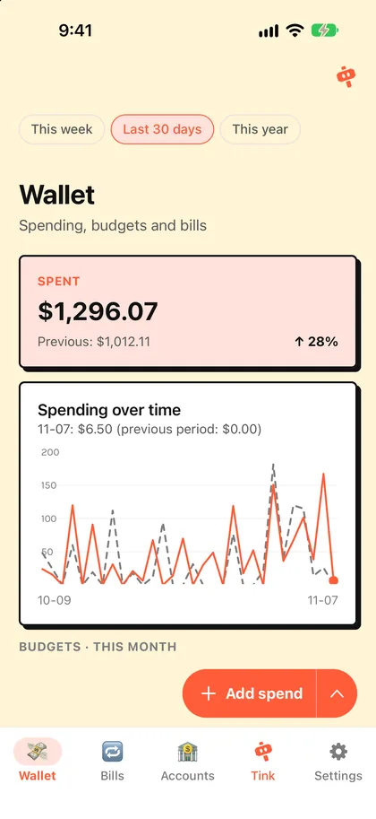
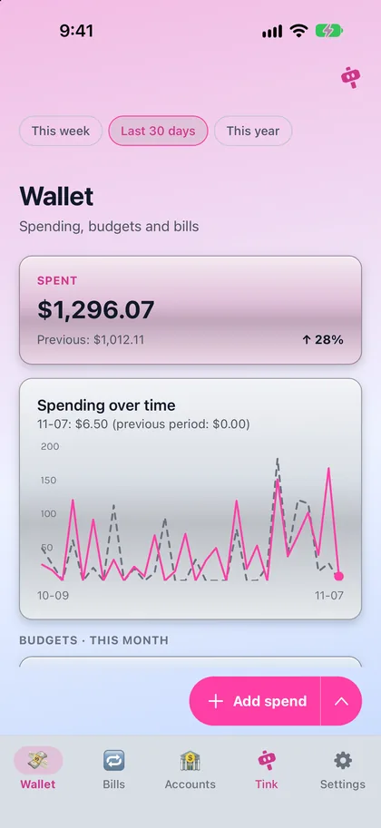
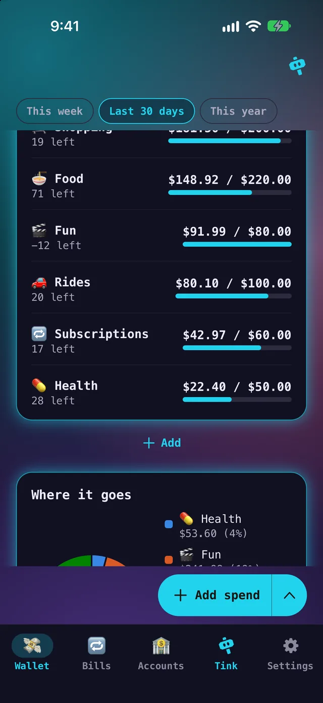
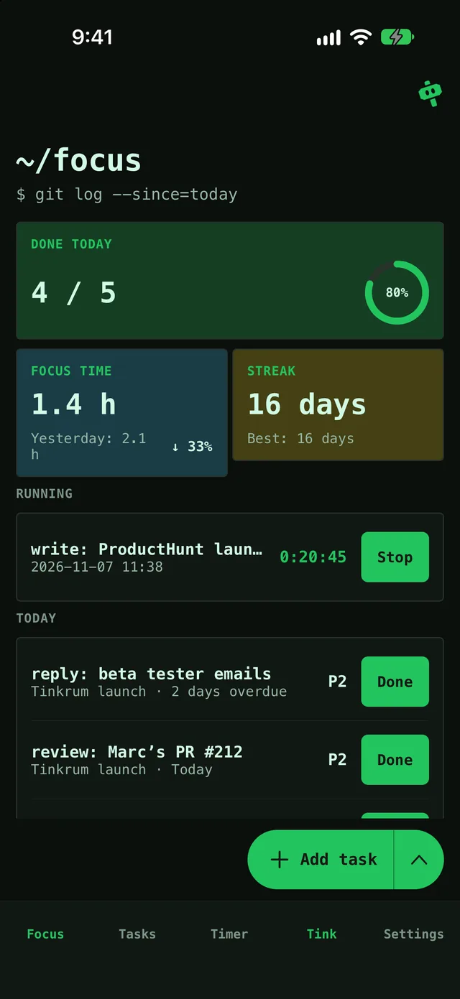
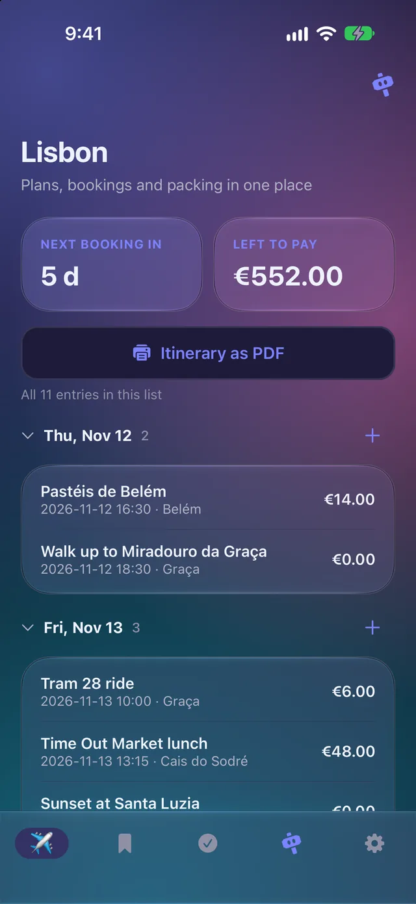
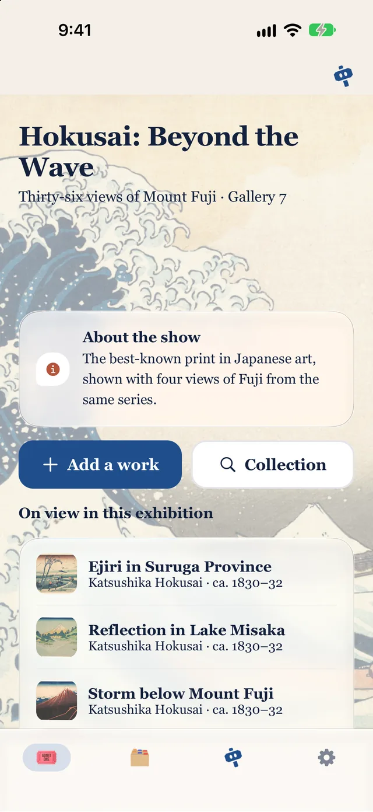
An exhibition guide on your own artwork.
No file: it uses your pictures.
To use a file: Settings → My presets → Import from a file. It is added as a new app, and you can undo it.
Our promises
All of it is on GitHub under AGPL-3.0. Read it, build it, fork it.
Scanning, text recognition, the small model and your records run on your phone. Your files never leave it.
No ads, no account, no subscription for anything that runs on your phone.
Tink's hosted AI has a free monthly allowance. With your own API key or the offline rules, there's no limit.
During the beta, what you tell Tink and the app layout are stored to improve the project. Files and records are never sent.